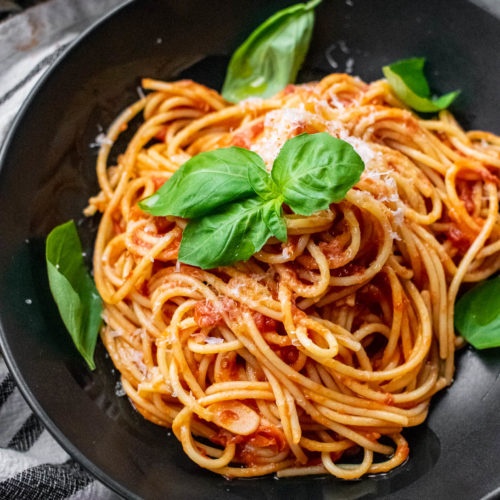

Pomodoro Recipe:

Description:
Easy and light pasta dish with tomatoes and garlic. Cooked chicken breast chunks or shrimp can also be added to sauce for a great main dish!
Ingredients:
- Garlic
- Olive oil
- Onion
- Spaghetti
- Tomato
- Parmagiano Reggiano
- Basil
- Salt and pepper
Steps:
- Bring a large pot of lightly salted water to a boil. Add pasta and cook for 8 minutes or until al dente; drain.
- Meanwhile, pour olive oil in a large deep skillet over high-heat. Add onions and garlic; cook and stir until softened and lightly browned. Reduce heat to medium-high and add tomatoes, vinegar, and chicken broth; simmer for about 8 minutes.
- Stir in red pepper, black pepper, basil and cooked pasta, tossing thoroughly with sauce. Simmer until pasta is heated through and serve topped with grated cheese.